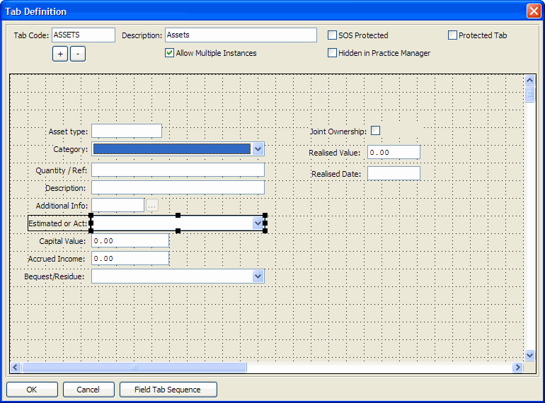

| Field Name | Data Type | Description |
| Custom tab code to which the custom field belongs | ||
| Custom field code | ||
| Custom field label | ||
| Custom field data type - either "Text", "Decimal", "Date", "List", "Notes", "Tick Box", "Counter" or "Relationship" | ||
| Custom field tabbing sequence number | ||
| The data slot (1-32) into which the field data will be saved (in PUB.ADDDATA.DATA) | ||
| Initial value of the field | ||
| Delimited list of drop-down options (for "List" type fields) | ||
| Custom field display style ("ST"=Standard, "HI"=Highlight, "WA"=Warning) | ||
| Read-only option | ||
| Derived: Last Modified Date | ||
| Derived: Last Modified Time (seconds past midnight) | ||
| Derived: Last Modified User Id | ||
| Reserved for future use | ||
| Reserved for future use | ||
| Reserved for future use | ||
| Comma-delimited list of 4 numbers defining the position and size of the field on the screen (left,top,width,height) | ||
| Searchable flag ("Yes" if the field is defined as searchable) | ||
| Reserved for future use | ||
| Reserved for future use | ||
| Reserved for future use | ||
| Reserved for future use | ||
| Reserved for future use | ||
| Reserved for future use | ||
| Reserved for future use | ||
| Reserved for future use | ||
| Reserved for future use | ||
| Reserved for future use | ||
| Reserved for future use | ||
| Reserved for future use | ||
| Reserved for future use | ||
| Reserved for future use | ||
| Reserved for future use | ||
| Reserved for future use | ||
| Reserved for future use | ||
| Reserved for future use | ||
| Reserved for future use | ||
| Reserved for future use | ||
| Reserved for future use | ||
| Reserved for future use | ||
| Reserved for future use | ||
| Reserved for future use |
| Index Name | Is Primary? | Is Unique? | Word Indexed? | Database Fields |
| AUDIT | MOD-DATE + MOD-TIME | |||
| FACTCODE-INX | FAC-FACT-CODE | |||
| SPARE-CHAR01 | SPARE-CHAR01 | |||
| SPARE-CHAR02 | SPARE-CHAR02 | |||
| SPARE-DATE01 | SPARE-DATE01 | |||
| SPARE-DATE02 | SPARE-DATE02 | |||
| SPARE-INT01 | SPARE-INT01 | |||
| SPARE-INT02 | SPARE-INT02 | |||
| TABCODE-INX | TAB-CODE |
This table holds individual custom tab field definitions as defined in Practice Manager Custom Tab Maintenance.
All custom tab fields belong to a custom tab, the linking between them at database level being:
TABDEFS.TAB-CODE -> FACTDEFS.TAB-CODE